Métaux toxiques en milieu de travail
Les métaux sont des contaminants persistants : ils ne se dégradent pas et s'accumulent dans l'organisme (os, foie, rein, SNC). Leur toxicité dépend de leur forme chimique (élémentaire, inorganique, organique) et de leur état physique (vapeur, fumée, poussière, brouillard). Cinq métaux lourds prioritaires : Pb, Hg, Cd, As, Sb. En mine, le profil varie selon le gisement : As pour l'or à arsénopyrite (Abitibi), Pb pour les peintures et soudures anciennes, Mn et Cr (VI) pour le soudage.
Table des matières
- Classification des métaux
- Métaux essentiels vs toxiques
- Facteurs de toxicité
- Absorption, distribution, élimination
- Métaux lourds prioritaires
- Procédés professionnels à risque
- Application terrain
- Ressources
Classification des métaux
| Famille | Caractéristique | Exemples |
|---|---|---|
| Alcalins (groupe 1) | Très réactifs, mous | Li, Na, K |
| Alcalino-terreux (groupe 2) | Présents chez le vivant | Mg, Ca, Sr, Ba |
| Métaux de transition | Multiples états d'oxydation, colorés, catalyseurs | Fe, Cu, Zn, Cr, Ni, Mn, Co, Hg, Cd |
| Lanthanides et actinides | Terres rares ; actinides radioactifs | La, U, Pu |
| Métaux pauvres | Mous, ductiles | Al, Pb, Sn |
| Métalloïdes | Propriétés intermédiaires | As, Sb, Si, B |
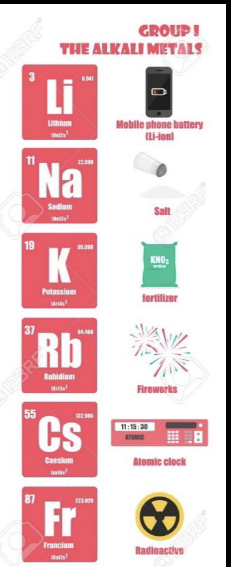
Toucher l'image pour l'agrandir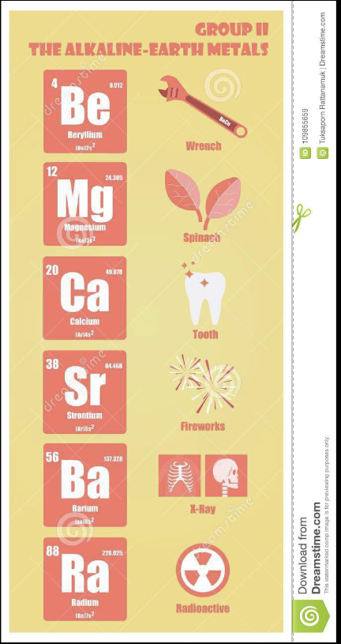
Toucher l'image pour l'agrandir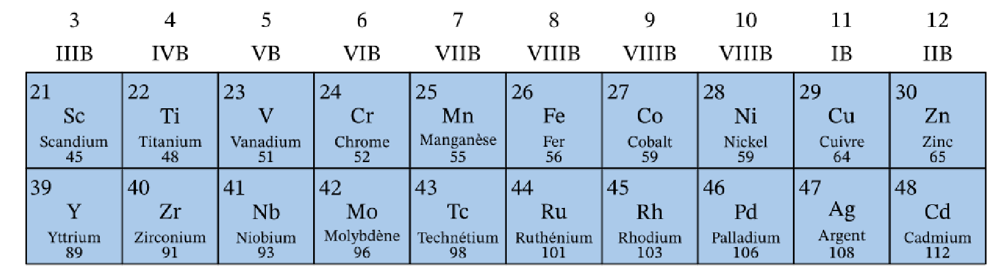
Toucher l'image pour l'agrandir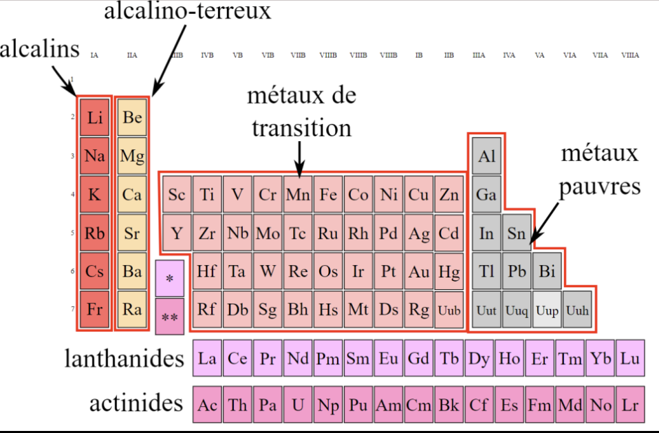
Toucher l'image pour l'agrandirMétaux essentiels vs toxiques
Plusieurs métaux sont essentiels à dose physiologique mais toxiques en excès
| Métal | Fonction | Toxicité, dose-réponse et DL50 en excès |
|---|---|---|
| Fer | Hémoglobine | Hémochromatose, sidérose pulmonaire |
| Zinc | > 300 enzymes | Fièvre des fondeurs (ZnO) |
| Cuivre | Cytochrome oxydase | Maladie de Wilson |
| Manganèse | Métabolisme énergétique | Parkinsonisme professionnel |
| Cobalt | Vitamine B12 | Fibrose pulmonaire (métaux durs), cardiomyopathie |
| Chrome (III) | Tolérance au glucose | Cr (VI) = cancérogène CIRC 1 |
| Sélénium | Antioxydant | Sélénose à fortes doses |
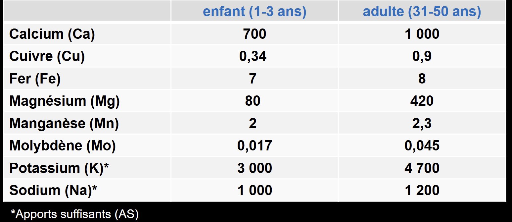
Toucher l'image pour l'agrandirApports nutritionnels recommandés (ANR) = quelques mg/jour à quelques µg/jour. Toujours considérer la forme chimique.
Facteurs de toxicité
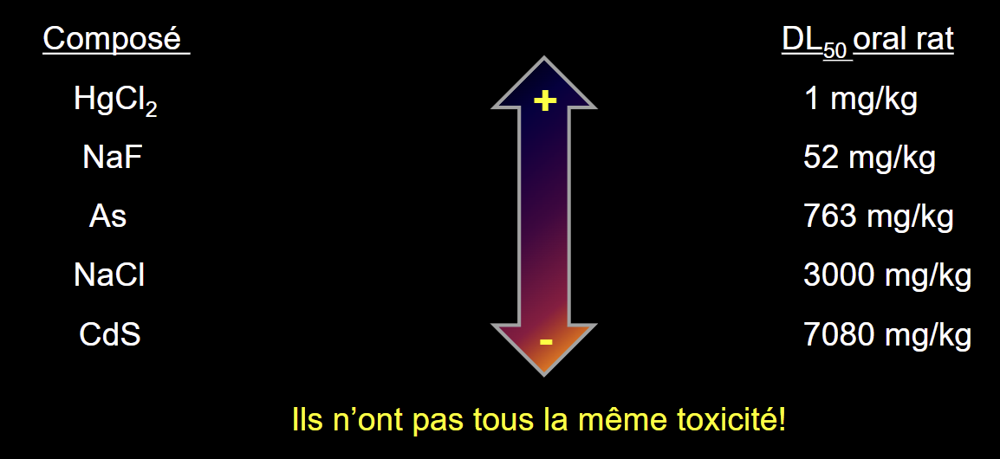
Toucher l'image pour l'agrandir| Facteur | Effet |
|---|---|
| Nature du métal | Toxicité, dose-réponse et DL50 intrinsèque |
| État d'oxydation | Cr (III) peu toxique vs Cr (VI) cancérogène ; As (III) > As (V) |
| Forme organique vs inorganique | Méthylmercure (org.) >> Hg inorganique pour le SNC ; Pb tétraéthyle (org., essence) vs Pb inorganique |
| État physique | Vapeurs (Hg élémentaire) > poussières fines > poussières grosses > liquide |
| Volatilité, solubilité | Détermine absorption et élimination |
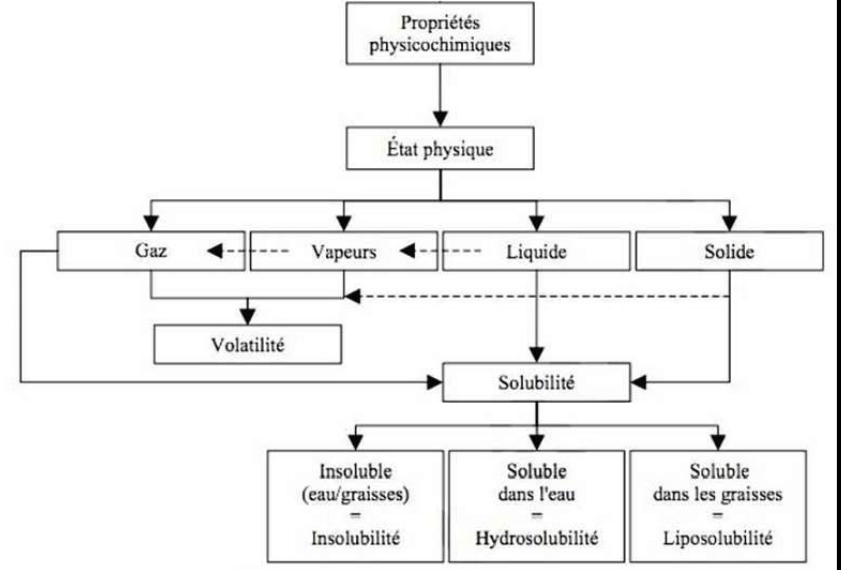
Toucher l'image pour l'agrandirAbsorption, distribution, élimination
Absorption
- Respiratoire : voie principale en milieu de travail. Fumées (< 1 µm) très efficaces (soudage). Vapeurs Hg élémentaire ~80 % absorbées.
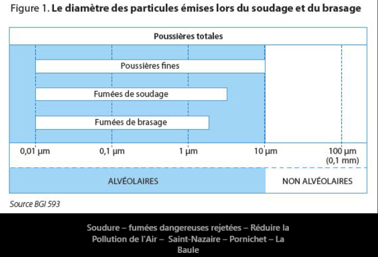
Toucher l'image pour l'agrandir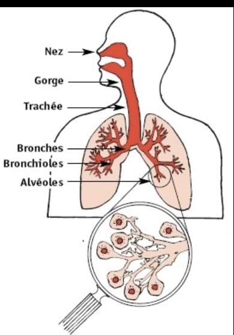
Toucher l'image pour l'agrandir- Digestive : Pb adulte 5-15 % ; Pb enfant 30-50 % ; à jeun 60-80 %. As, Cd faible. Ingestion accidentelle (poussières sur mains, repas en zone contaminée).
- Cutanée : Hg organique (très), Pb organique (TEL), composés alkylés.
Distribution
| Compartiment | Métaux typiques |
|---|---|
| Sang (GR, albumine) | Pb (90 % dans les GR), As, Hg court terme |
| Foie | Cd (métallothionéine), Cu, Mn |
| Rein | Cd, Hg, Pb |
| Os | Pb (T1/2 20-30 ans), F, Sr, Pu |
| SNC | Méthylmercure, Mn, Pb (via BHE chez l'enfant) |
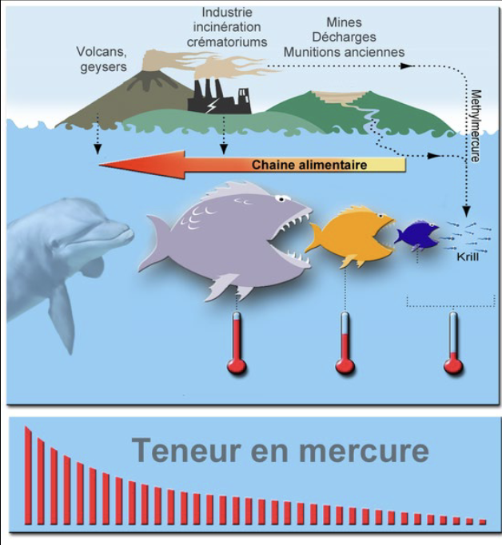
Toucher l'image pour l'agrandirÉlimination
- Urine : majorité des métaux solubles (Hg inorganique, Cd, Pb partiellement, As).
- Fèces (bile) : Mn, Cu, métaux non absorbés.
- Cheveux, ongles : As, Hg (bioindicateur a posteriori).
- Lait : Pb, Hg.
Bio-indicateurs
| Métal | IBE recommandé |
|---|---|
| Pb | Pb sanguin (Pb-S) ; ZPP, ALA-U |
| Hg inorganique | Hg urinaire |
| Hg organique | Hg sanguin total ; cheveux |
| Cd | Cd urinaire (longue exposition), β2-microglobuline |
| As inorganique | As urinaire spécié (As III + V + MMA + DMA, hors As organique poisson) |
| Cr (VI) | Cr urinaire |
| Mn | Mn sanguin (peu fiable) |
Métaux lourds prioritaires
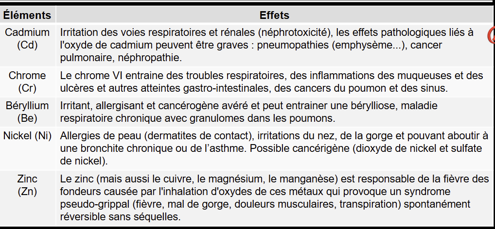
Toucher l'image pour l'agrandirMercure (Hg)
- Formes : élémentaire (Hg0, vapeur), inorganique (Hg2+, sels), organique (méthylmercure CH3Hg+).
- Sources : amalgames dentaires (résiduel), orpaillage, chlore-alcaline, électronique, thermomètres.
- Toxicité : SNC (tremblement, érétisme, troubles cognitifs), reins (Hg2+), tératogène (méthylmercure : Minamata).
- VEMP Qc : 0,025 mg/m³ (Hg élémentaire).
Cadmium (Cd)
- Sources : batteries Ni-Cd, pigments, alliages, fumée (cigarette = source non professionnelle majeure), brasage à l'argent.
- Toxicité : poumon (CIRC 1), rein (β2-microglobulinurie, tubule), os (itai-itai).
- Accumulation : T1/2 ~20 ans. VEMP Qc : 0,025 mg/m³ (fraction inhalable).
Antimoine (Sb)
- Sources : alliages avec Pb (batteries), retardateurs de flamme, céramique.
- Toxicité : irritation pulmonaire, atteinte cardiovasculaire (proche de l'arsenic).
Arsenic (As)
- Sources : pesticides historiques, préservation du bois (CCA), métallurgie, mines d'or (arsénopyrite, Abitibi), microélectronique (AsH3).
- Toxicité : CIRC 1 (peau, poumon, vessie), hyperkératose, neuropathie, anémie, cardiovasculaire.
- VEMP Qc : 0,01 mg/m³.
Plomb (Pb)
- Sources : peintures anciennes, batteries, soudures, plomb tétraéthyle (essence historique), munitions, vitraux, radiateurs.
- Toxicité : SNC (encéphalopathie chez l'enfant, déficits cognitifs irréversibles), neuropathie périphérique chez l'adulte, anémie (inhibition synthèse hème), rein, reproduction.
- IBE : Pb-S ; programme de surveillance médicale CNESST si Pb-S élevé.
- VEMP Qc : 0,05 mg/m³ (composés inorganiques, fraction inhalable).
Béryllium (Be)
- Sources : alliages aérospatiale, électronique, céramique, certains gisements.
- Toxicité : bérylliose chronique (granulomatose immunologique CD4), cancer poumon (CIRC 1).
- Test : LTT (Lymphocyte Transformation Test).
Chrome VI (Cr (VI))
- Sources : soudage inox, chromage, tannerie, ciment, pigments.
- Toxicité : cancer poumon et sinus (CIRC 1), ulcères cutanés et perforation cloison nasale, sensibilisant cutané.
Nickel (Ni)
- Sources : alliages, batteries, soudage inox, monnaies, bijoux.
- Toxicité : sensibilisant cutané majeur (dermatite contact), cancer poumon/nasopharynx (CIRC 1 pour composés).
Manganèse (Mn)
- Sources : aciers (alliages), soudage, batteries alcalines.
- Toxicité : manganisme (Parkinson-like), neurotoxicité chronique.
Procédés professionnels à risque
| Procédé | Métaux libérés |
|---|---|
| Soudage | Fumées de Fe, Mn, Cr (VI) inox, Ni inox, Cd brasure, Be alliages, Zn galvanisé |
| Fonderie | Fumées et poussières du métal travaillé |
| Galvanoplastie / traitement de surface | Brouillards Cr (VI), Ni, Cd, cyanures |
| Fabrication du verre | Pb, As, Sb, Cd (pigments) |
| Céramique | Pb (émaux), Co, Cr |
| Mines | As, Hg, Pb selon gisement |
| Recyclage métaux / électronique | Pb, Cd, Hg, terres rares |
| Construction (démolition) | Pb (peintures), Amiante, Programme de prévention silice cristalline |
Mesures préventives
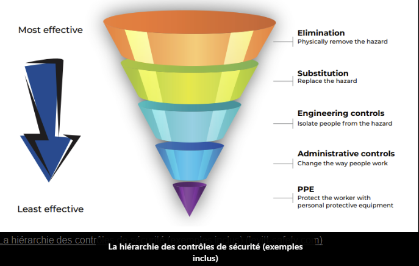
Toucher l'image pour l'agrandir- Substitution (Pb → étain dans soudures, Cr (VI) → Cr (III)).
- Encoffrement, ventilation locale aspirante (captage à la source).
- EPI respiratoire (P100, masques cartouches selon métal et forme).
- Hygiène : douches, vêtements de travail séparés, pas de repas en zone.
- Surveillance biologique des métaux en mine périodique (IBE).
Application terrain
Le profil métaux varie fortement selon le type d'exploitation
| Type de mine | Métaux prioritaires | Sources principales |
|---|---|---|
| Or à arsénopyrite (Abitibi) | As | Forage, concassage, usine de cyanuration |
| Polymétalliques (Zn, Pb, Cu) | Pb, Cd (impureté), Zn | Concentrateur, fonderie associée |
| Nickel | Ni | Concassage, raffinage |
| Or par orpaillage historique | Hg | Résidus contaminés |
| Cuivre | Cu, As (impureté) | Concentrateur, fonderie |
| Uranium | U (chimique), radon (séparé) | Mine et usine de yellowcake |
| Béryllium (rare) | Be | Très rare, expertise spécialisée requise |
Mesures clés sur tous les sites miniers
- Soudage : ventilation locale aspirante, P100, surveillance Mn et Cr (VI) urinaire pour les soudeurs intensifs.
- Démolition de bâtiments anciens : test Pb avant travaux, EPI, douches.
- Usine de procédé or : suivi As urinaire des opérateurs (programme annuel typique).
- Mécanique poids lourd : attention aux pièces avec brasures Cd ou aux peintures Pb (engins anciens).
- Stockage et manipulation des concentrés : poussières riches en métaux, vêtements et douches dédiés (« changement de tenue » obligatoire avant repas).
Ressources
| Document | Type | Source |
|---|---|---|
| Annexe I RSST (VEMP métaux) | Règlement | LégisQuébec |
| Protocole de surveillance Pb-S (CNESST, rôles et pouvoirs) | Programme | CNESST |
| Fiches IRSST par métal | Fiches | IRSST |
| Registre IBE par travailleur | Registre interne | Médecin désigné |
Articles wiki connexes
Pages qui pointent ici (16)
- 🎯 Démarrage rapide, conseiller SST Hygiène industrielle
- 🏠 Wiki Hygiène industrielle, mines Hygiène industrielle
- Aérosols Hygiène industrielle
- Agresseurs chimiques Hygiène industrielle
- Amiante Hygiène industrielle
- art-188.1-RSST Hygiène industrielle
- art-39-RSST Hygiène industrielle
- Asphyxiants simples et chimiques Hygiène industrielle
- Équipements de protection Hygiène industrielle
- Lire une FDS rapidement Hygiène industrielle
- Multiexposition aux contaminants Hygiène industrielle
- Reconnaître une exposition Hygiène industrielle
- SIMDUT et classes de danger Hygiène industrielle
- Solvants organiques Hygiène industrielle
- Substances dangereuses Hygiène industrielle
- Surveillance biologique des métaux en mine Hygiène industrielle